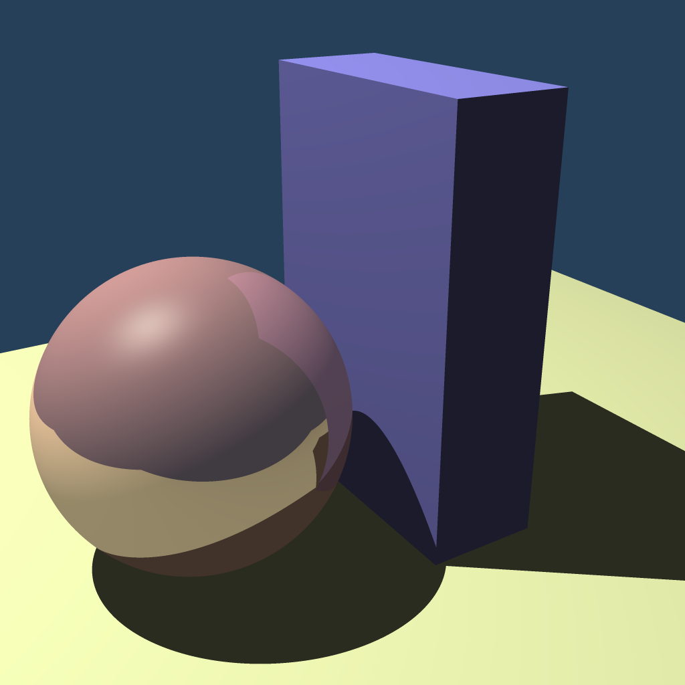
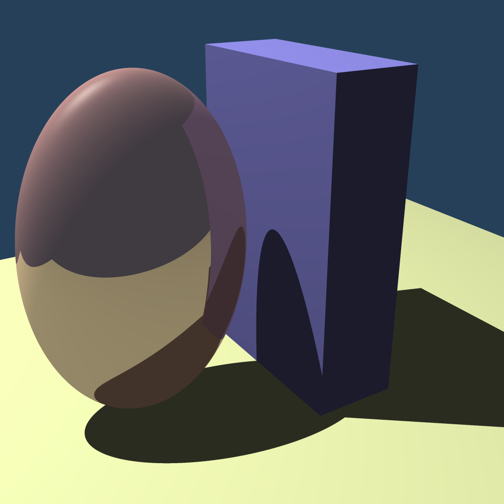
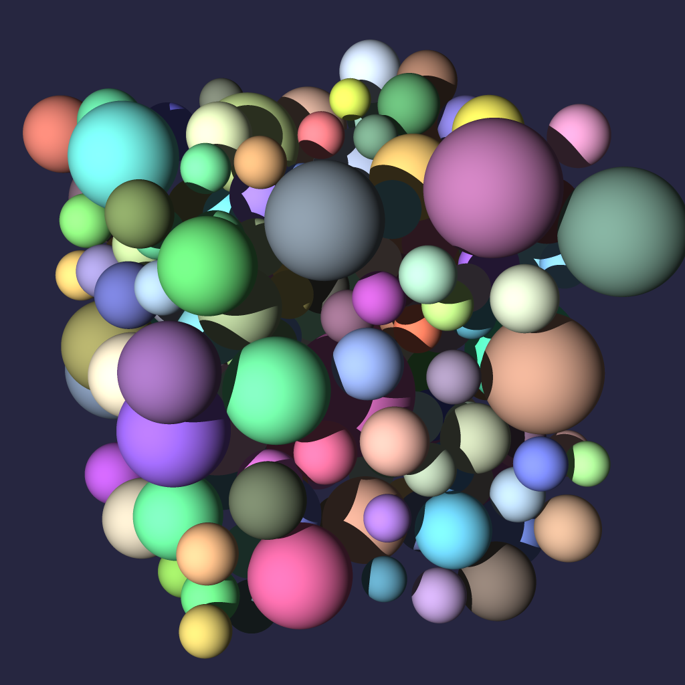
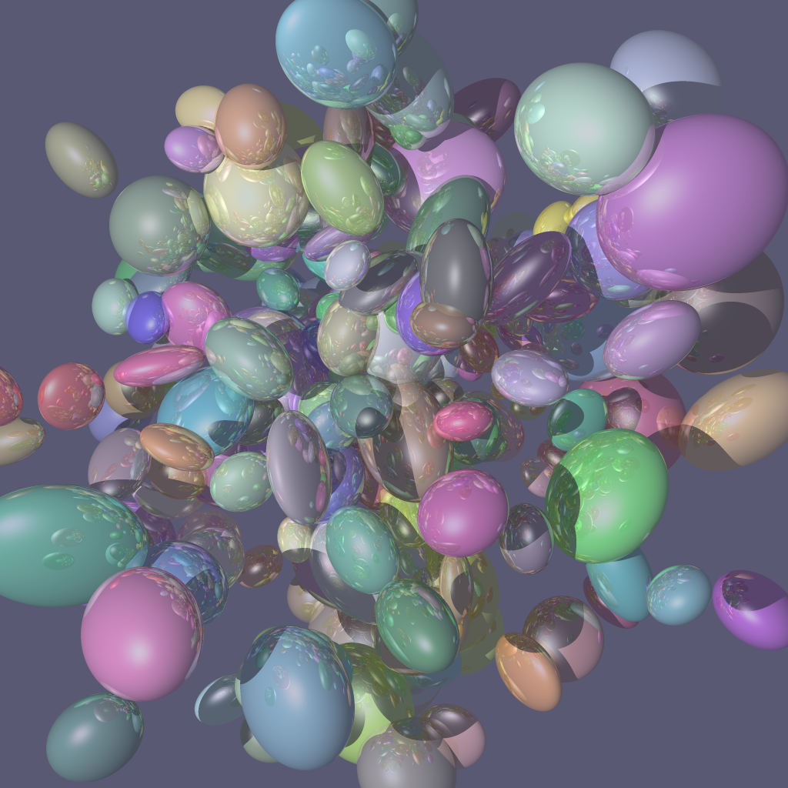
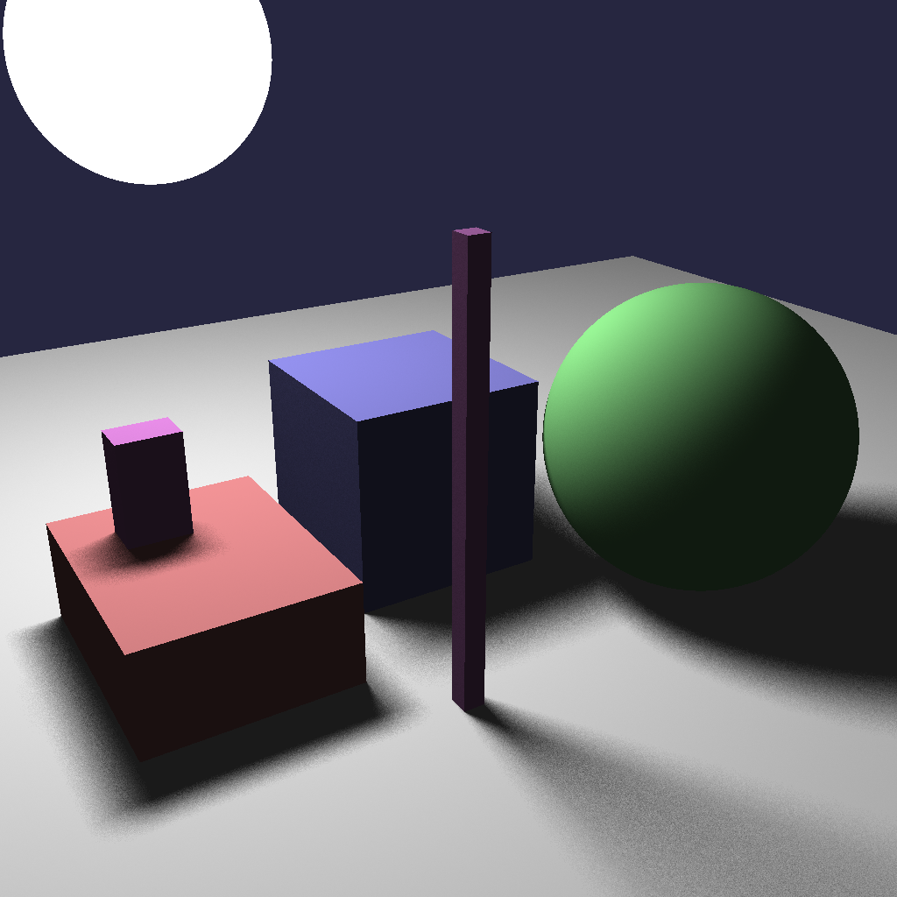
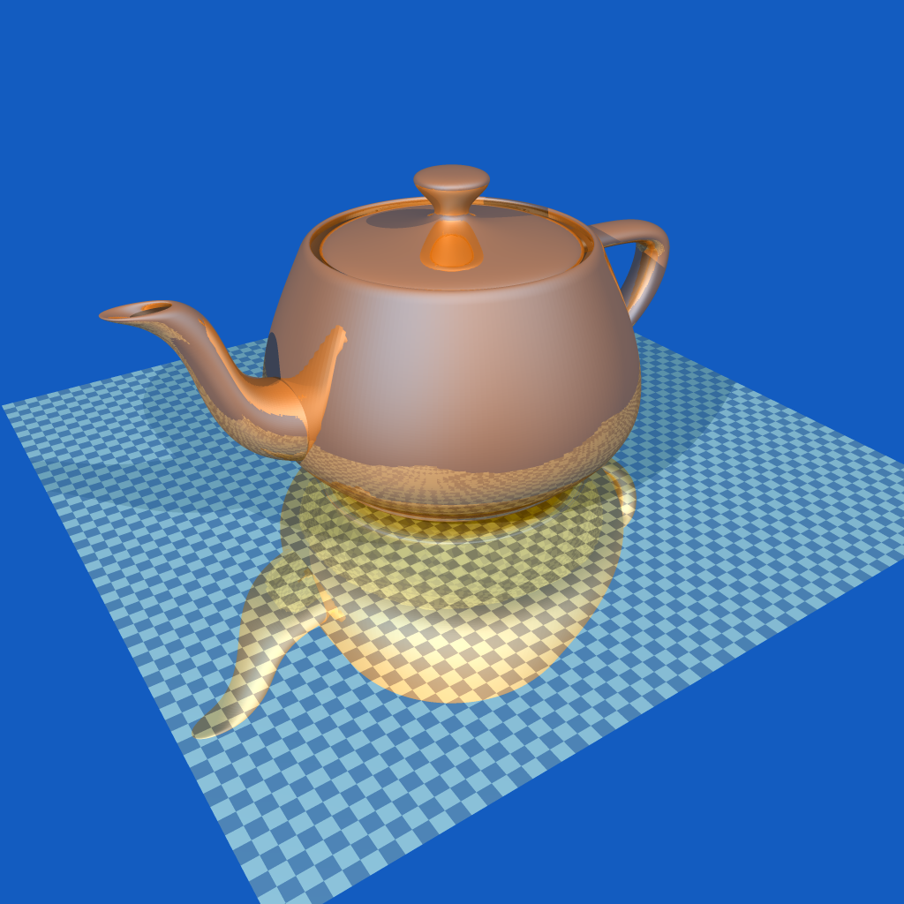
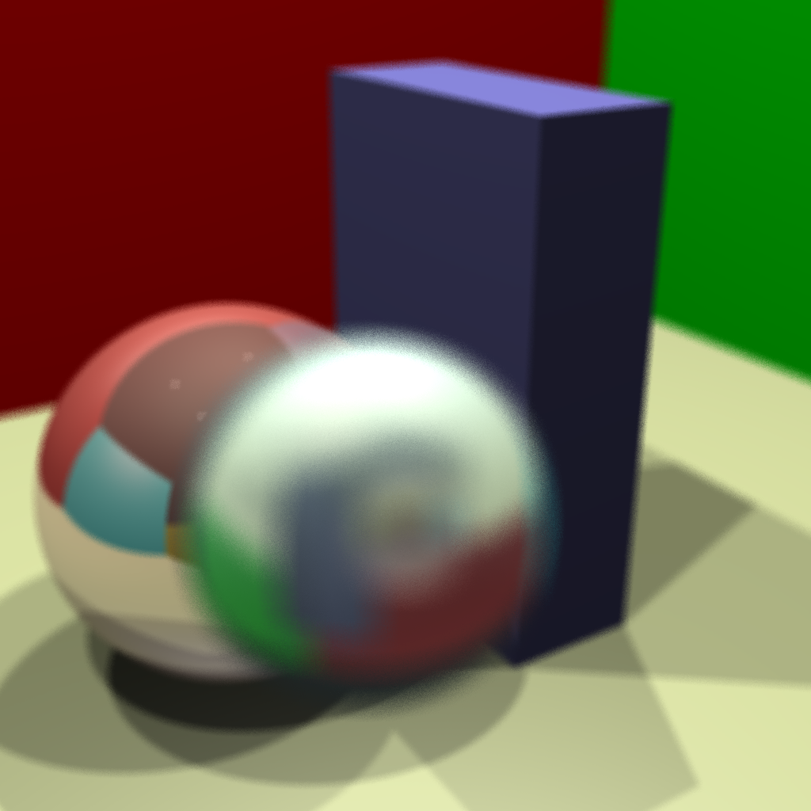

Rendered by James Arvo's toytracer (UC Irvine, Fall 2004), extended by Kevin Brandon and resurrected in 2026. Organized by feature; every image is rendered fresh by the section scripts. Click any image for full size.
The two milestones from the course: implementing reflection, then affine transformations, on the simple scene shown in class.

Reflection
The scene shown in class: a reflective sphere and two blocks.

Affine Transformation
The same scene, the sphere squashed into an ellipsoid by a 3x4 affine matrix.
Building up one feature at a time on a field of 200 objects: plain spheres, then the same objects transformed into ellipsoids, then made reflective.

Spheres
200 diffuse spheres with soft self-shadowing - the starting point.
Affine Ellipsoids
The same 200 spheres, each squashed into an ellipsoid by its own affine matrix. No reflection.

Reflective Ellipsoids
The same 200 ellipsoids, now reflective - each mirrors its neighbors.
Soft shadows from a spherical light, approximated by Monte-Carlo sampling. Watch the shadow noise vanish as the sample count climbs from 1 to 49.
Area Light - 1 sample
A spherical light softly illuminating boxes and a ball, sampled with 1x1 = 1 Monte-Carlo shadow samples per point. Very noisy with a single sample.
Area Light - 4 samples
A spherical light softly illuminating boxes and a ball, sampled with 2x2 = 4 Monte-Carlo shadow samples per point. Softening as samples increase.
Area Light - 9 samples
A spherical light softly illuminating boxes and a ball, sampled with 3x3 = 9 Monte-Carlo shadow samples per point. Softening as samples increase.
Area Light - 16 samples
A spherical light softly illuminating boxes and a ball, sampled with 4x4 = 16 Monte-Carlo shadow samples per point. Softening as samples increase.

Area Light - 25 samples
A spherical light softly illuminating boxes and a ball, sampled with 5x5 = 25 Monte-Carlo shadow samples per point. Smooth soft shadows.
The showpieces: the acceleration structure carrying a quarter-million triangles, and the lens model producing depth of field.

Reflective Teapot
The Utah teapot at 229,921 triangles - reflective, on a reflective checkerboard floor. Only tractable because of the BVH acceleration structure.

Depth of Field + Refraction
A glass sphere (refraction) in a Cornell-style room, shot through a lens focused mid-scene - the background blurs while the spheres stay sharp.